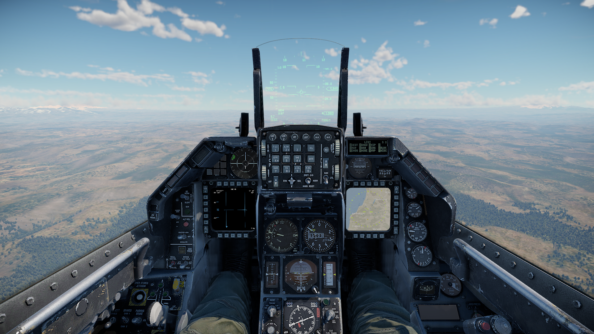
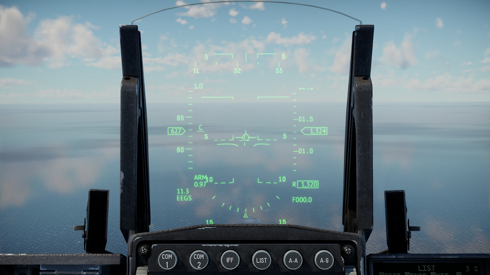
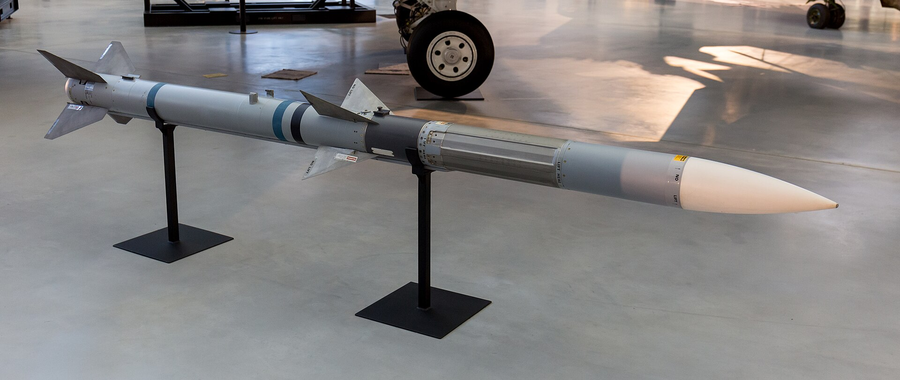

Aircraft-Logistics

Cock-pit
The pilot flies primarily by means of an armrest-mounted side-stick controller (instead of a traditional center-mounted stick) and an engine throttle; conventional rudder pedals are also employed. To enhance the pilot's degree of control of the aircraft during high-g combat maneuvers, various switches and function controls were moved to centralized hands on throttle-and-stick (HOTAS) controls upon both the controllers and the throttle.
The pilot flies primarily by means of an armrest-mounted side-stick controller (instead of a traditional center-mounted stick) and an engine throttle; conventional rudder pedals are also employed. To enhance the pilot's degree of control of the aircraft during high-g combat maneuvers, various switches and function controls were moved to centralized hands on throttle-and-stick (HOTAS) controls upon both the controllers and the throttle.

HUD
The F-16 has a head-up display (HUD), which projects visual flight and combat information in front of the pilot without obstructing the view; being able to keep their head "out of the cockpit" improves the pilot's situation awareness.[102] Further flight and systems information are displayed on multi-function displays (MFD).
The F-16 has a head-up display (HUD), which projects visual flight and combat information in front of the pilot without obstructing the view; being able to keep their head "out of the cockpit" improves the pilot's situation awareness.[102] Further flight and systems information are displayed on multi-function displays (MFD).

AIM-120A
The AIM-120[a] Advanced Medium-Range Air-to-Air Missile (AMRAAM)is an American beyond-visual-range air-to-air missile capable of all-weather day-and-night operations. It uses active transmit-receive radar guidance instead of semi-active receive-only radar guidance. When an AMRAAM missile is launched, NATO pilots use the brevity code "Fox Three".
The AIM-120[a] Advanced Medium-Range Air-to-Air Missile (AMRAAM)is an American beyond-visual-range air-to-air missile capable of all-weather day-and-night operations. It uses active transmit-receive radar guidance instead of semi-active receive-only radar guidance. When an AMRAAM missile is launched, NATO pilots use the brevity code "Fox Three".